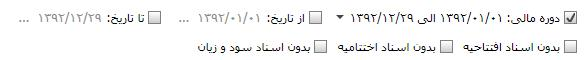
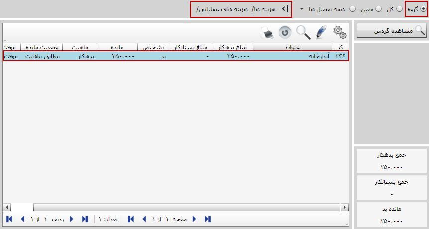
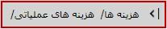
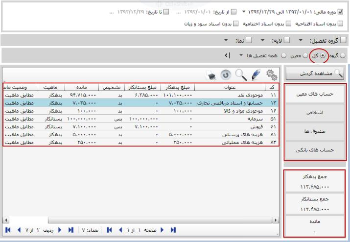
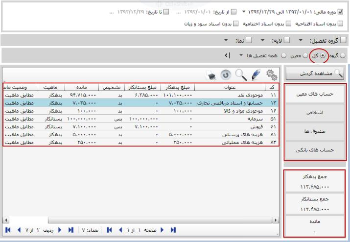
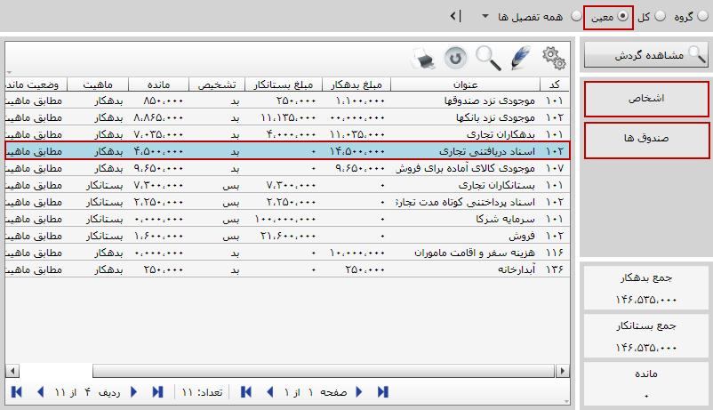

با کلیک روی این منو از نرم افزار صفحه مربوط به آن ظاهر می شود که در شکل زیر مشاهده می کنید:


صفحه مربوط به مرور و مشاهده حساب ها دارای 4 قسمت است که هر یک را در ادامه توضیح می دهیم:
همان طور که قبلا هم بیان کردیم، از قسمت بالا می توانید لیست حساب های نمایش داده شده در صفحه مرور و مشاهده حساب ها را بر حسب «دوره مالی»، «بازه تاریخی»، «بدون اسناد افتتاحیه»، «بدون اسناد اختتامیه» و «بدون اسناد سود و زیان» فیلتر کنید.

با استفاده از این بخش می توانیم حساب های موجود در جدول صفحه مرور حساب ها که در شکل با شماره 3 نمایش داده شده است را به تفکیک گروه های حساب، حساب های کل، معین و حساب های تفصیلی مربوط به هر یک مشاهده کنید.
 با کلیک روی این گزینه از شکل بالا لیست گروه های حسابی که در سیستم دارای گردش هستند نمایش داده می شوند. انتخاب این گزینه این امکان را می دهد که مرور حساب ها را از گروه های حساب آغاز کنید. در شکل صفحه قبل گزینه «گروه» انتخاب شده و گروه های حسابی که دارای گردش هستند در جدول موجود در کادر 3 نمایش داده می شود.
با کلیک روی این گزینه از شکل بالا لیست گروه های حسابی که در سیستم دارای گردش هستند نمایش داده می شوند. انتخاب این گزینه این امکان را می دهد که مرور حساب ها را از گروه های حساب آغاز کنید. در شکل صفحه قبل گزینه «گروه» انتخاب شده و گروه های حسابی که دارای گردش هستند در جدول موجود در کادر 3 نمایش داده می شود.
 اگر به جای گروه روی کل کلیک کنید صفحه زیر باز می شود که در آن لیست همه حساب های کلی که در سیستم دارای گردش هستند نشان داده شده است و مرور حساب ها را با شروع از حساب های کل میسر می سازد.
اگر به جای گروه روی کل کلیک کنید صفحه زیر باز می شود که در آن لیست همه حساب های کلی که در سیستم دارای گردش هستند نشان داده شده است و مرور حساب ها را با شروع از حساب های کل میسر می سازد.

 حال اگر از کادر شماره 2 روی معین کلیک کنید صفحه شکل زیر باز می شود که در آن لیست همه حساب های معینی که دارای گردش هستند به نمایش در می آید و می توان با استفاده از آن مرور حساب ها را از حساب های معین آغاز کرد.
حال اگر از کادر شماره 2 روی معین کلیک کنید صفحه شکل زیر باز می شود که در آن لیست همه حساب های معینی که دارای گردش هستند به نمایش در می آید و می توان با استفاده از آن مرور حساب ها را از حساب های معین آغاز کرد.

با انتخاب این گزینه در جدول شکل قبل لیست همه تفصیل هایی که در سیستم دارای گردش هستند به نمایش درمی آید. همچنین می توانید پس از انتخاب این گزینه، لیست تفصیل ها را به تفکیک اشخاص، صندوق ها، حساب های بانکی و ... یا نمایش همه تفصیل ها مشاهده کنید.
در دومین تصویر از ابتدای صفحه که صفحه مرور و مشاهده حساب ها را نمایش می دهد، کادر شماره 3 دارای چندین آیتم است که کاربرد و عملکرد آن ها را توضیح می دهیم.
طبق مطالبی که قبلا گفته شد این قسمت شامل جدولی است که گردش حساب ها را بر اساس گزینه انتخابی شما نمایش می دهد. اگر نمایش بر اساس هر یک از گروه های حساب، حساب کل یا معین باشد، با دبل کلیک روی هر حساب یا فشردن کلید Enter می توانید حساب ها یا تفصیل های زیر مجموعه آن حساب که دارای گردش هستند را مشاهده کنید.
در شکل قبل مشاهده می کنید که نمایش لیست بر اساس گروه حساب تعیین شده و در کادر  آدرس دسترسی به معین مربوطه مشخص شده است. در شکل قبل دسترسی به حساب معین «آبدارخانه» از طریق گروه حساب «هزینه ها» و حساب کل «هزینه های عملیاتی» ایجاد شده است.
همچنین می توانید با قرار گرفتن روی هر حساب و انتخاب دکمه «مشاهده گردش»
 ، گردش آن حساب را در حساب های کل و معین مربوطه مشاهده نمایید.
، گردش آن حساب را در حساب های کل و معین مربوطه مشاهده نمایید.

پس از کلیک روی «مشاهده گردش» پنجره شکل بالا نمایش داده می شود. در این شکل هم گردش حساب انتخاب شده و همچنین مسیر دسترسی به حساب مربوطه نیز نمایش داده شده است. همانند بسیاری از صفحات در نرم افزار، این صفحه نیز دارای قابلیت انتخاب دوره مالی خاص، بازه تاریخی خاص و فیلتر بر اساس اسناد افتتاحیه، اختتامیه و اسناد سود و زیان می باشد. بر طبق انتخاب هر یک از موارد نام برده شده، گردش حساب انتخاب شده نمایش داده می شود.
در صفحه «مشاهده گردش» چند دکمه قرار گرفته اند که موارد کاربرد آن ها چنین است:
 با استفاده از این گزینه می توانید گردش مورد نظر را انتخاب کرده و سند مربوط به گردش انتخابی را مشاهده نمایید.
با استفاده از این گزینه می توانید گردش مورد نظر را انتخاب کرده و سند مربوط به گردش انتخابی را مشاهده نمایید.
 این دکمه به شما این امکان را می دهد که از گردش حساب انتخابی به تفکیک لایه های آن گزارش تهیه کنید. با کلیک روی این دکمه پنجره زیر ظاهر می شود.
این دکمه به شما این امکان را می دهد که از گردش حساب انتخابی به تفکیک لایه های آن گزارش تهیه کنید. با کلیک روی این دکمه پنجره زیر ظاهر می شود.
در این پنجره با انتخاب لایه مورد نظرتان و انتخاب گزینه تایید، گزارش دلخواه خود را به تفکیک لایه انتخاب شده مشاهده نمایید.
 با استفاده از این دکمه می توانید تعدادی گردش دلخواه از حساب انتخاب شده را مخفی نمایید.
با استفاده از این دکمه می توانید تعدادی گردش دلخواه از حساب انتخاب شده را مخفی نمایید.
 : با استفاده از این دکمه می توانید گردش هایی را که با گزینه قبلی مخفی کرده اید را به نمایش در آورید.
: با استفاده از این دکمه می توانید گردش هایی را که با گزینه قبلی مخفی کرده اید را به نمایش در آورید.
با استفاده از این دکمه مانده در سطر را در هنگام فیلتر کردن گردش حساب مجددا محاسبه نمایید و مانده را برای سطر های فیلتر شده نشان میدهد.
در کادر شماره 3 که در دومین تصویر از بالا به آن اشاره شد با انتخاب هر حساب، چند تب در سمت راست صفحه به نمایش در می آید. تب های موجود در این بخش در واقع دسترسی مستقیم به حساب های زیر مجموعه حساب انتخاب شده می باشند. برای مثال اگر حساب انتخاب شده «گروه حساب» باشد تب های مربوط به آن «حساب های کل» و «حساب های معین» می باشد و به شما این امکان را می دهد که گروه حساب مورد نظر را به تفکیک حساب های کل و معین داشته باشید. و اگر حساب انتخاب شده حساب کل یا معین باشد، تب های موجود «حساب های معین» و لایه های مربوط به آن خواهند بود.
در شکل زیر نمایش حساب ها بر اساس گروه حساب است و گروه حساب « هزینه ها» در حالت انتخاب است. توجه داشته باشید که تب های کناری حساب های کل و حساب های معین می باشند.
 

در شکل بالا لیست حساب های کل را مشاهده می کنید، در سمت راست شکل بالا با توجه به حساب کل انتخابی،(مثال: حساب ها و اسناد دریافتنی تجاری) تب های مختلفی را مشاهده می کنید که تب اول « حساب های معین» برای همه حساب های کل وجود دارد و تب های دیگر حساب های تفصیلی هستند که به معین های حساب کل انتخابی ارتباط داده شده اند و بنا بر حساب کل انتخابی متفاوت هستند. با کلیک روی هر یک از این تب ها می توانید حساب های مربوط به آنها را مشاهده کنید. به طور مثال روی تب حساب های معین کلیک می کنیم و در صفحه بعد حساب های معین حساب کل انتخابی را مشاهده می کنیم:

در شکل بالا نمایش حساب ها بر اساس حساب کل می باشد، حساب درج شده در کنار گزینه «همه تفصیل ها» حساب کلی است که از طریق آن به حساب معین «اسناد دریافتنی تجاری» دسترسی یافته ایم. معین های نشان داده شده در شکل بالا، معین های زیر مجموعه حساب کل «حساب ها و اسناد دریافتنی تجاری» می باشد.
همچنین در شکل زیر نمایش حساب بر اساس معین است و تب های مربوطه تفصیل های مرتبط با آن معین که دارای گردش هستند خواهند بود. در هر دو شکل قبلی و بعدی که در صفحه بعد خواهید دید، تب های «اشخاص» و «صندوق ها» برای حساب معین «اسناد دریافتنی تجاری» یکسان هستند و تنها نحوه دسترسی به آن ها متفاوت می باشد.
در شکل بالا همانند قسمت های قبل که توضیح داده شد هر حساب معینی را که انتخاب کنید، اگر با حساب تفصیلی ارتباط داده شده باشد در سمت راست شکل تب تفصیل مورد نظر ظاهر می شود و با کلیک روی آن می توانید وضعیت حساب تفصیل را مشاهده کنید. مثلا در شکل فوق معین «اسناد دریافتنی تجاری» دارای دو تفصیل «اشخاص» و «صندوق ها» است که از طریق دو تب در سمت چپ صفحه به آن ها دسترسی خواهید داشت.
اگر روی تب اشخاص کلیک کنید، در صفحه باز شده لیست اشخاصی که با معین انتخاب شده در شکل قبل مرتبط هستند نمایش داده خواهد شد.

در شکل بالا مسیر دسترسی به تفصیل اشخاص انتخاب شده با کادر قرمز رنگ مشخص شده است. صفحه مربوط به تفصیل صندوق ها را نیز می توانید همانند تب اشخاص باز کنید و جزئیات آن را مشاهده نمایید.
در آخر اگر نحوه نمایش لیست حساب ها را بر اساس «همه تفصیل ها» تعیین کنیم، لیست همه تفصیل های در گردش نمایش داده می شود. با انتخاب هر تفصیل سه تب «گروه ها»، «حساب های کل» و «حساب های معین» برای هر تفصیل در سمت راست صفحه قرار می گیرد که از طریق این تب ها می توانید به حساب معین، حساب کل و گروه حساب مرجع آن تفصیل دسترسی داشته باشید.

وقتی در صفحه «همه تفصیل ها» قرار دارید با دبل کلیک کردن روی هر تفصیل تب «حساب های معین» از سمت راست (تب آخر) صفحه انتخاب می شود و حساب های معین مربوط به تفصیل مشاهده می شود. ولی در بقیه حالت ها، وقتی در صفحات «گروه»، «کل» و یا «معین» قرار دارید با دبل کلیک کردن روی حساب مورد نظر از جدول، تب اول انتخاب شده و اطلاعات آن به نمایش در می آید.
باز هم به دومین تصویر از ابتدای صفحه باز گردید و کادر مشخص شده با شماره 4 را مشاهده نمایید.

در صفحه اصلی مرور و مشاهده حساب ها، این کادر به چشم می خورد که دارای سه قسمت جمع بدهکار، جمع بستانکار و مانده می باشد. اگر در صفحه اصلی مرور و مشاهده حساب ها قرار گیرید و نحوه نمایش لیست حساب ها را بر اساس «گروه»، «کل» یا «معین» انتخاب کنید، مقدار آیتم های جمع بدهکار، جمع بستانکار و مانده تغییری نمی کند. در این کادر در صفحه اول مرور و مشاهده حساب ها، همواره باید جمع بدهکار با بستانکار برابر باشد، در واقع این بخش همان قاعده تراز بودن حساب های سمت بدهکار و سمت بستانکار را در حسابداری نشان می دهد.
اگر در صفحه مرور و مشاهده حساب ها روی هر یک از حساب ها دبل کلیک کنید، پس از ورود به حساب مورد نظر، مقادیر موجود در کادر شماره 4 تغییر می کند. مقادیر جدید جمع مقادیر بدهکار و بستانکار و مانده حساب انتخاب شده را نمایش می دهد.

در شکل بالا مقادیر بدهکار، بستانکار و مانده برای حساب کل «موجودی نقد» نشان داده شده است. همچنین معین های مربوط به حساب کل انتخابی همچون «موجودی نزد صندوق ها» و «موجودی نزد بانک ها» نیز در شکل نمایان است.